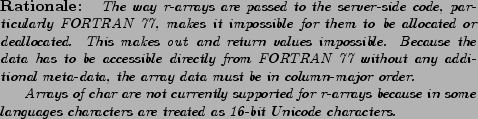
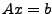

Next: SIDL Language Features Up: Arrays Previous: Generic Arrays Contents Index
Since SIDL was designed to serve the high performance computing community, both SIDL object developers and clients may require direct access to the underlying array data structure for optimization purposes, such as instruction pipelining or cache performance. Hence, support for raw SIDL arrays was introduced for low level access to numeric arrays. At present, they are limited use in C, C++, FORTRAN 77, and Fortran 90.
Unlike normal SIDL arrays, the use of r-arrays are more restricted.
More specifically, they have the following constraints

The advantages of r-arrays include:
When you declare an r-array, you also declare the index variables that will hold the size of the array in each dimension. For example, here is an method to solve one of the fundamental problems of linear algebra, :
void solve(in rarray<double,2> A(m,n),
inout rarray<double> x(n),
in rarray<double> b(m),
in int m,
in int n);
In this example, A is a 2-D array of doubles with m rows and n columns. x is a 1-D array of doubles of length n, and b is a 1-D array of doubles of length m. Note that by explicitly declaring the index variables, SIDL takes avoid using extra array size parameters by taking advantage of the fact that the sizes of A, x and b are all inter-related. The explicit declaration also allows the developer to control where the index parameters appear in the argument list. In many cases, the argument types and order can match existing APIs.
The mapping for the solve method will be shown for C, C++, FORTRAN 77 and Fortran 90 in the following chapters. In languages that do not support low level access such as Python and Java, r-arrays are treated just like normal SIDL arrays, and the redundant index arguments are dropped from the argument list. The indexing information is available from the SIDL array data structure.